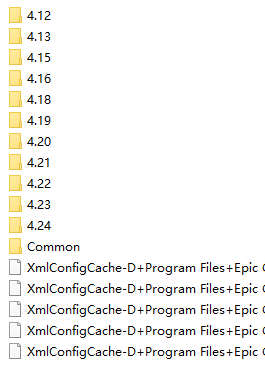
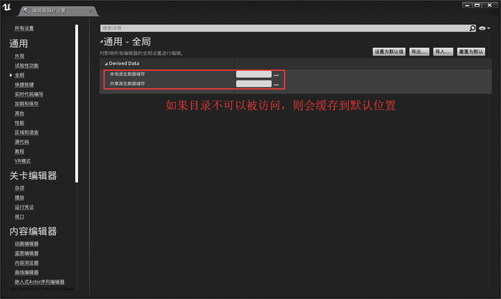
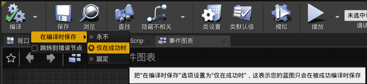
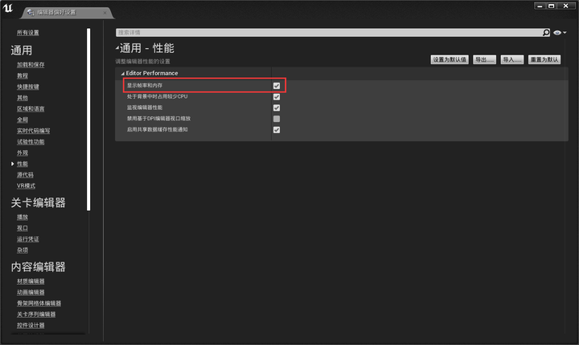
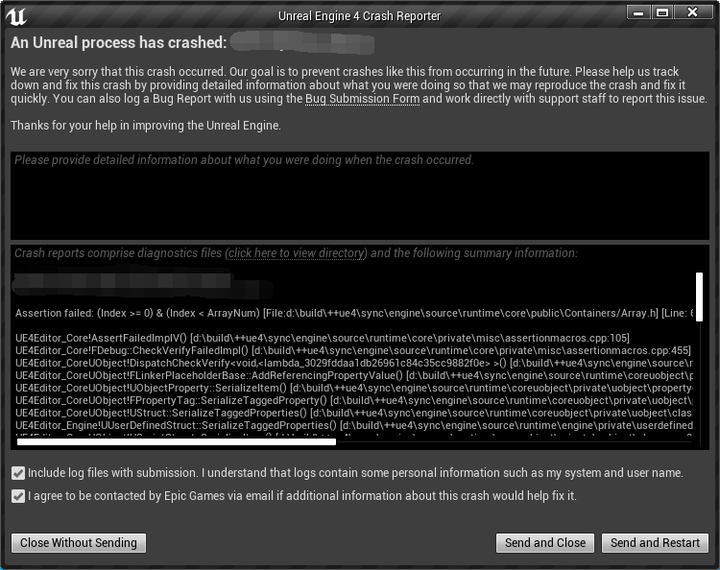
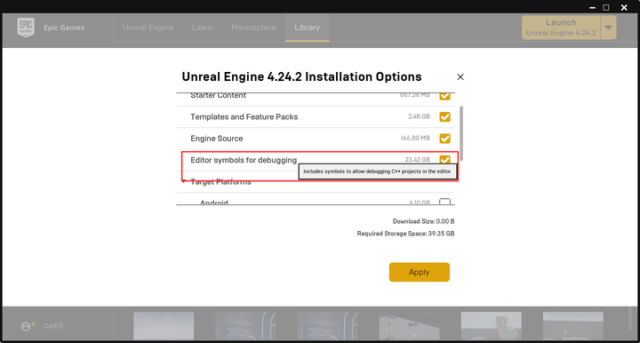
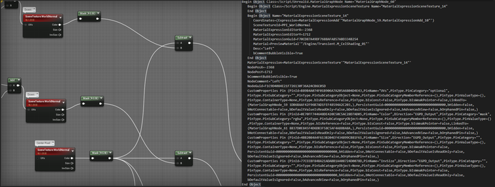

十个“并无卵用”的虚幻4使用小技巧
关键词： 虚幻引擎、游戏开发、使用小技巧
授权协议：CC BY-NC-SA 3.0，转载请标注来源
0、惯例在前面说的话
本文所列出的内容，都以UE-4.24为参考模板。
如有需要，笔者亦会在文中标明印象中该方式可用的最早可用的引擎版本。
如发现有误，请在评论区或私信指正。
1、系统重装后，减少UE4安装所需步骤和时长
开发者们最日常的操作就是因为各种 “勇” 和 “莽” 将操作系统整到彻底崩溃。在想尽各种办法企图自救的无效后，最终的方式当然只有重新安装。（比如笔者）
如何加速重新安装的步骤呢？
- 到启动器内创建新引擎版本，并启动安装；
- 在安装先决条件完成且**下载到2%**时用任务管理器结束Epic启动器进程；
- 打开引擎安装目录，不要动里面任何目录和文件（如.egstore）。将之前的引擎完整的粘贴到目录下面；
- 重启启动器，点击继续。步骤会跳到 “正在安装” → “正在验证” ；
大功告成！
如果启动器开始下载引擎（有下载速度），则意味着操作失败，此时重试一下就可以了。
多次失败则最好检查一下引擎文件是否有缺损（多半是复制出问题了）。
当然还有一个方法：将启动器的数据都备份下来，然后在重装后直接对目录拷贝。但因为不符合本专栏 “连猫都看得懂” 这个主题，就不在本文中进行论述了。
相关信息
当前用户、设置缓存：%LOCALAPPDATA%\EpicGamesLauncher ；
启动器缓存目录：%ProgramData%\Epic
- EpicGamesLauncher 缓存和版本信息（必须项目）；
- UnrealEngineLauncher 版本信息；
注册表键值：HKEY_LOCAL_MACHINE\SOFTWARE\EpicGames ；
小贴士：
%LOCALAPPDATA%（当前用户软件配置目录变量）；
%ProgramData%（本机软件配置目录变量）；
扩展知识：
虚幻引擎多台计算机快速部署：
用于学术环境的虚幻引擎安装：
2、日常使用的时候，引擎狂吃磁盘空间当缓存
Neko，磁盘的空间是有极限的！我从短暂的开发当中学到一件事：越是开发大项目,就越会发现磁盘的空间是有极限的。除非我不做UE4了！
——公司某同事
那么如何阻止同事不做开发呢？
简单来说，就是将引擎生成的缓存从C盘挪出去。
首先，要搞清楚UE4引擎的缓存位置。（然后直接删除）
默认情况下，这个缓存位置在： %LOCALAPPDATA%\UnrealEngine

注意1： 得解除隐藏目录才能看到某些东西；
注意2： SwarmAgent的缓存在 ：
%LOCALAPPDATA%\UnrealEngine{引擎版本}\Saved\Swarm\SwarmCache
小贴士： 可以用系统自带的“库”来管理相关目录；
直接删除就图一乐，关键还得靠改引擎配置；
修改的位置在引擎的 编辑器偏好设置>通用-全局 分类下；

当然你也可以直接用VS Code（或记事本）改配置文件；
注意：配置文件在的位置在 {引擎安装目录}\Engine\Config\BaseEngine.ini
将配置文件的
Local=(Type=FileSystem, ReadOnly=false,Clean=false, Flush=false, PurgeTransient=true, DeleteUnused=true,UnusedFileAge=34, FoldersToClean=-1, Path="%ENGINEVERSIONAGNOSTICUSERDIR%DerivedDataCache")替换为
Local=(Type=FileSystem, ReadOnly=false,Clean=false, Flush=false, PurgeTransient=true, DeleteUnused=true,UnusedFileAge=34, FoldersToClean=-1,Path="%GAMEDIR%DerivedDataCache")注意：
%ENGINEVERSIONAGNOSTICUSERDIR%（当前引擎版本目录变量）
%GAMEDIR%（当前游戏工程目录变量）
3、在蓝图编译后不用再点一次鼠标保存
可用版本：4.13+
我们在写蓝图的时候，往往在编译后还需要手动进行一次保存。当时发现这个问题的时候真的是特别烦。（因为公司的猫会踩到电源开关）
好在UE4有一个容易被人忽略的设定：蓝图编辑器上编译按钮右边的小箭头上菜单中隐藏着一个小小的菜单。
菜单内可以让你选择什么情况下进行保存。里面有三个选项：
- 永不（Never）： 默认设定，手动保存；
- 仅在成功时（On Success Only）： 我喜欢的选项，编译通过后自动保存；
- 总是（Always）： 无论成功与否，只要编译就保存。这样就可以把保存按钮去掉了（笑；

4、显示编辑器实时信息
可用版本：4.14+
对于大部分人来说，这的确是个没有什么用的功能。
但如果有这方面需求，会比自己写蓝图要方便一点；
启用方法是在 编辑器偏好设置>通用-性能 菜单项下勾选 显示帧率和内存；

启用后会出现在编辑器的右上角，项目名称的下方：

甚至能看到窗口没聚焦时UE4编辑器的摸鱼现场（FPS=3）（逃 ε=ε=ε=┏(゜ロ゜;)┛
小贴士： 键盘上 按下 ~ 启动编辑器命令行，然后输入stat fps 和 stat unit 可以在游戏视口内启用。同样的方式也可以在调试模式中的独立游戏实体启动。

5、打包项目后发现内容不一致怎么办？
可用版本：4.13+
这个问题发生在笔者的一位开发者朋友身上，他在发布游戏更新版本的时候发现新增的修改没有被打包到新的版本包中。定位问题的时候我们找到了临时修复的方法：
在 项目设置→（正在）打包 选项卡的 Project 选项集内勾选 完整重编译 选项，即可解决这一问题。（实际上官方也推荐我们这样做）

小贴士： 同样功能的配置文件在 ../Config/DefaultGame.ini 文件下，亦可在这里修改。
[/Script/UnrealEd.ProjectPackagingSettings]
FullRebuild=True6、项目打包后发现内容缺失怎么办？
可用版本：4.13+
在一些特殊情况下，我们的工程中可能存在某些不会被直接引用的项目内容，但这些内容又恰恰和项目功能息息相关。
UE4在打包的时候往往会将这些看似无关的东西偷偷放走，然后导致成品游戏中的某些功能突然不能用，更有甚者会带来一次愉悦的崩溃……
这 真 是 太 糟 糕 了！
幸好我们还有解决方法， UE4项目配置系统为我们提供了一个解决方案：打开 项目设置 选中 项目-正在打包 菜单栏，在 Packaging 分类下的 要打包的非资源额外目录 设置项增加一个数组元素，然后将需要打包的目录填进去即可。

小贴士： 找不到可以用上面的搜索栏搜索关键词。
其实笔者在《RE：从零开始的虚幻动态立绘初体验》内也写了这个方法，不知道有没有人注意到。
7、解决因为蓝图错误导致的引擎启动失败
可用版本：4.9+
在人极端倒霉的时候，喝凉水都会塞牙缝； 对于开发者来说，霉运最糟糕时会恶化成引擎启动的过程中发生崩溃。
而大多数情况下，造成崩溃的原因是上一次写蓝图的时候自己给自己挖了坑。但是UE4是绝对不会认输的，所以你会在崩溃到前往崩溃之间不断轮回……
在遭遇这种情况的时候，我们想到的方法估计只有回想一下自己之前挖的坑是什么，然后将那个蓝图文件删除或者用外部版本管理进行回滚。
但这样的最终会导致之前拖了蓝图文件全部木大（消失），这样的结局怎么能被接受呢？
幸好这样的问题是有解决方法的：修改启动配置来禁止蓝图启动重编译。
这项功能本来是为特定领域的UE4用户准备的，但我们可以用这个方法来完成自救。
在无法启动编辑器的时候，我们可以选择的方法只有修改配置文件。打开 ../Saved/Config/Windows/Engine.ini （引擎配置）文件并将以下内容填写并保存。
[/Script/Engine.Blueprint]
bRecompileOnLoad=False
[/Script/Engine.LevelScriptBlueprint]
bRecompileOnLoad=False
[/Script/Engine.AnimBlueprint]
bRecompileOnLoad=False如果仍然发生崩溃，可以将启动关卡地图进行更换为空地图。打开 ../Config/DefaultEngine.ini （引擎默认配置）文件并将以下内容修改并保存。
[/Script/EngineSettings.GameMapsSettings]
EditorStartupMap=None再次重启，编辑器就能正常启动了。
小贴士： 造成引擎启动崩溃的原因可能多种多样，主要的原因一般是 中文路径 、某些输入法、先决条件缺失、引擎组件损坏、代码挖坑 逐项针对排查解决即可。 笔者用这个方法解决了某个工程从4.23升级到4.24无法完成启动的问题。
8、当项目突然崩溃后如何定位问题
每一个UE游戏开发者最恐惧的事情就是玩家在群里贴出这张图：

你的编程技术被UE4嘲讽了……
这时候让玩家打开这个目录，将崩溃产生的数据打包发给你或者前往自己定义的崩溃数据接收服务器下载崩溃数据。
崩溃记录一般是四个文件，分别是 辅助程序汇报配置（.ini） 、运行时崩溃内容（.runtime-xml） ， 项目运作记录（.log） 和 小型内存崩溃转储文件（.dmp） 。
崩溃报告器可以勾选 项目设置→项目-正在打包→Packaging 的 包括崩溃报告器 启用（带有蓝图的项目一般会默认启用）。
查找问题的方法有三条思路：
- 通过运行记录看看出现故障前最后发生的操作；
- 通过Xml回报来让定位造成崩溃的原因是什么；
- 在Visual Studio上用内存崩溃转储文件复现故障原因；
通过这三个方法，我们就可以定位造成崩溃的具体问题是什么，从而对阵下药解决问题。
内存崩溃转储文件模式调试的时候，需要利用到 调试符号文件 ，这个在启动器勾选安装。

9、向其他人分享蓝图，真香！
有的时候我们可能要分享蓝图给朋友或者其他开发者，传统的方法一般有两种：
- 对着自己的蓝图截图发送；
- 直接全选蓝图直接复制结构化数据；

传统方法，不够香
但这两种方法看起来都不怎么香……
那怎么样才能让大家 真香 呢？
外国开发者Sébastien Rancoud（@Rancoud）发明了一个工具BlueprintUE，让一切变得真香
官方网址是这个：
PasteBin blueprints For Unreal Engine 4
然后感谢大佬 @陶仁贤 把这个工具带进国内，并进行了完整的本地化：
10、老板临时改主意要改游戏风格怎么办？
Neko：这一条是用来凑数的……
作为尽心尽责的开发人员，在开发的过程中，我们得时刻提防策划提出异想天开的内容。
强行去实现力所不能及的内容不仅劳民伤财，还有可能导致项目中道崩殂。
但如果策划同时是你老板的的话，问题就变得比较麻烦了……
比如说老板大人在项目实现到一半的时候说要改做像素游戏那怎么办？
直接说 “我™不做了！” 肯定是不行的……

人总是被迫向现实低头
幸好UE4 叕 给出了解决方法 后处理（虽然一开始不是用来做这个用途的）。
首先在 关卡视图 左边的 模式 中拖出 Post Process Volume ，然后丢到场景里；

然后找到 Post Process Materials ，将你写好的临时糊弄的后处理材质丢进去……
大功告成！
下面是专门糊弄人的三渲二的后处理材质，拿去用吧！
CelShader（后处理） | blueprintue.cn
夏姬芭镐解决所有问题，性能什么的去死吧！
题外话
原本这篇“小技巧”应该在年前就发出来了，但因为家里有事情一直拖着到了现在。既然因为疫情无法出门，大家可以好好利用这几天假期，做些平日工作时不能进行的放松或是专心学习些新东西，也算是因祸得福了。
也希望在家宅着的各位老哥们劳逸结合，注意身体。
加油，奥里给！

白上吹雪（By：凪白みと） | Pixiv 78346205
本文以CC BY-NC-SA 3.0协议发布，转载请标注来源。
本博客所有文章除特别声明外，均采用 CC BY-NC-SA 3.0 协议 ，转载请注明出处！